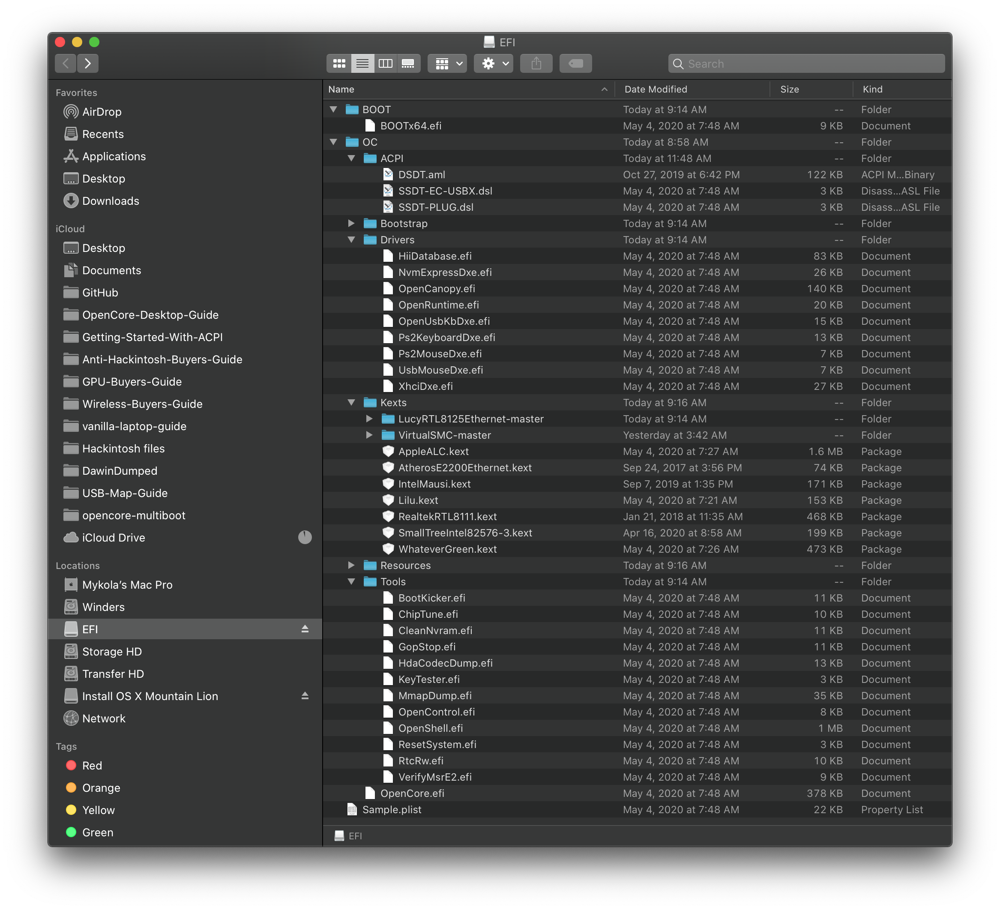

Last modified: Mon Jun 15 2020 20:08:15 GMT+0000 (Coordinated Universal Time)
Installation Process
Now that you've finished setting up OpenCore, you're finally able to boot, main things to keep in mind:
- Enable BIOS settings optimal for macOS
- Read up on the Multiboot Guide
- Mainly relevant for those running a single drive for multiple OSes
- And a copy of the General Troubleshooting page
- Read up on the macOS Boot Process
- Can help first time installers better understand where they may be getting stuck
- And a ton of patience
1. Double checking your work
One last thing we should go over before booting is how your EFI is setup:
| Good EFI | Bad EFI |
|---|---|
 |
 |
| * EFI folder found on EFI partition | * EFI folder missing |
| * ACPI Files are compiled(.aml) | * ACPI Files are not compiled(.dsl) |
| * DSDT is not included | * DSDT is included |
| * Removed unneeded Drivers(.efi) | * Leaves default Drivers |
| * Removed unneeded Tools(.efi) | * Leaves default Tools |
| * All files in the Kexts folder end in .kext | * Includes source code and folders |
| * config.plist found under EFI/OC | * Neither renamed or placed the .plist in right location |
| * Only uses kexts that are needed | * Downloaded every kext listed |
And a reminder that slowgeek site is your friend:
2. Booting the OpenCore USB
So you're now ready to finally put the USB stick into your computer and boot off of it, remember that your laptop will still default to the internal drive with Windows so you'll need to enter the BIOS or boot menu and select the USB. You'll need to check in the user manual or use a bit of google to find out what Fn key accesses the BIOS and boot menu(ie. Esc, F2, F10 or F12)
Once you boot the USB, you'll likely be greeted to the following boot options:
- Windows
- macOS Base System (External) / Install macOS Catalina (External)
- OpenShell.efi
- Reset NVRAM
For use, Option 2. is the one we want. Depending how the installer was made, it may report as either "macOS Base System (External)" if created in Linux or Windows and "Install macOS Catalina (External)" if created in macOS.
3. macOS Installer
So you've finally got the installer booted, got through the verbose and hit the installer! Now that you've gotten this far, the main things to keep in mind:
- Drives you wish to install macOS on must be both of GUID partition Scheme and APFS
- High Sierra on HDD and all Sierra users will need to use macOS Journaled(HFS+)
- The drive must also have a 200MB partition
- By default, macOS will setup freshly formatted drives with 200MB
- See the Multiboot Guide for more info on partitioning a Windows Drive
Once you start the installation, you will want to wait until the system restarts. You will once again want to boot into OpenCore, but rather than selecting your USB installer/recovery - you will want to select the macOS installer on the hard drive to continue installation. You should get an apple logo, and after a few minutes you should get a timer at the bottom saying "x minutes remaining". This may be a good time to get a drink or snack as this will take a while. It may restart a couple more times, but if all goes well, it should finally plop you at the "Setup your Mac screen"
You're in! 🎉 You will want to go through the Post-Installation pages to finish setting up your system.